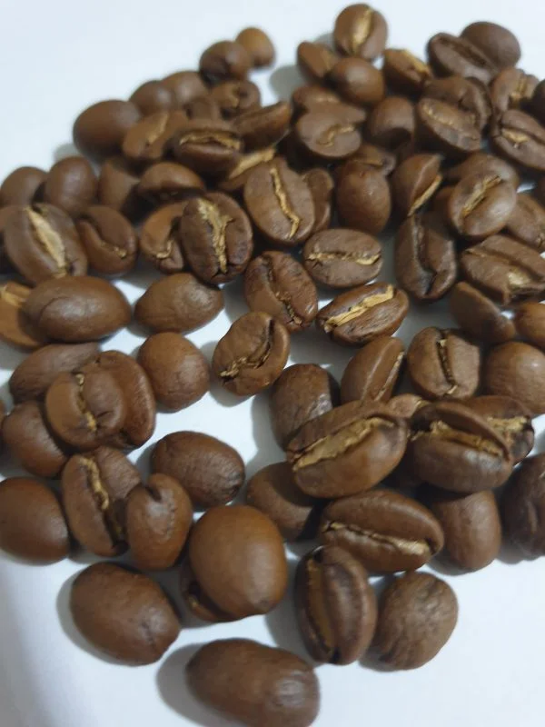

Arabica
Arabica is the most common (and certainly most heavily marketed) type of coffee in North America. That’s because it actually has a sweeter, more delicate flavor and the coffee itself tends to be less acidic. Arabica beans are farmed in areas with high elevations above sea level, particularly those where rain is plentiful. In fact, Brazil, known for its lush rainforest, is the world’s foremost exporter of Arabica beans. The plants themselves are fairly delicate, requiring a fair amount of pruning and constant attention to environmental factors. The Coffee arabica species is particularly prone to disease so farming in great quantities is a challenge. This drives up the cost of the bean considerably in the global market, but many coffee drinkers around the world are happy to pay the difference because of the softer, sweeter taste.
One point to note about the popular but sensitive bean is that its taste has a reputation of being diminished a bit when it is served cold or blended with milk or creamer. While that may be the case, it’s fair to say the difference probably won’t be noticeable when you’re adding some additional flavor to the drink anyway. (District Roasters website)